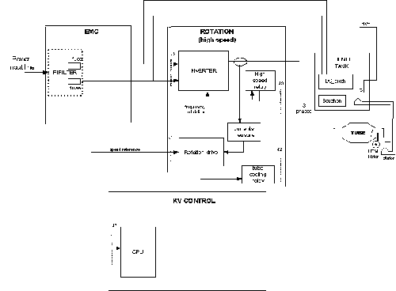

Operating Documentation
Direction 5193755-800, Rev# 8
BrightSpeed (Ltd. Access) Service Methods - Adv
Operating Documentation |
The rotation function is mainly controlled by the kV control CPU function.
Illustration 1: JEDI Generator / Rotation Function

| NOTE: | For a larger version of the above illustration, click on the pdf icon below: |
Media File 1: JEDI Generator / Rotation Function

When the CPU receives the exposure enable signal (either by a communication message or by a real time hardware line both linked to the prep button), it sends the anode speed reference to the rotation function.
Upon receiving this command, the rotation drive:
compares it to the present anode speed. If the present speed is lower:
gets, from the JEDI database, the current required to accelerate the anode and the acceleration time to apply
drives the inverter with the frequency required for the speed selected
measures the phase currents, compare them to the current demand and applies the modulation rate to supply the right stator current
counts the acceleration time
monitors rotation safeties
sends back each 100ms the speed to the kV control CPU
The speed feedback is used by the PPC board CPU to authorize exposure.
Once the acceleration time is complete, the rotation drive applies the inverter current required for the anode speed maintain.
When exposure command goes in its inactive state, the CPU either:
sends a speed=0 command to the rotation to stop the anode rotation,
applies a "hold" time to maintain the anode rotation speed before stopping it, or
applies a "hold" time to maintain the anode rotation speed before going to a low speed mode depending on the application.
In the case of tube with a non insulated stator, the rotation board cannot be connected directly to the tube. A transformer must be installed each phase. This is the main role of the HEMIT (high efficiency motor insulated transformer).
The second role of the HEMIT assembly is to dissipate the energy recovered during the brake of the anode of the tube.
rating matching generator power requirements.
HEMIT function is available in the case of a tube with HEM, like Performix, in the systems LS16, Ultra and Plus.
The HEMIT has been designed for 3-phase motors. It provides an insulation of 75 kV between the primary and the secondary (connected to the stator of the tube). Inside the tank, we can find the three insulation transformers. See Illustration 1.
The high voltage is coming from the HV tank thought the HV cable. This point is connected to one of the three phases of the stator.
The point of the connection of the 3 phases of the rotation board is the board BOUCHON. This board is used for this purpose and also to close the tank, making the transfer of the 3 wires into the tank (filled of oil).
During the brake of the anode, a HEM provokes the recovery of a part of the mechanical energy of the anode. This energy is transformer from mechanical to electrical throughout the HEMIT and the rotation board. The effect is the increasing of the DC bus voltage.
This voltage can increase over 800Vdc if no action is no discharge is performed. This over-voltage can be dangerous for the IGBTs of the rotation and for the electrolytic capacitors.
The DC-DISCH board has been designed to avoid that. The main functions are:
Discharge the DC bus using a transistor (IGBT) and a resistor when the voltage exceeds 760V (approx).
Security 1: permit the discharge of the DC bus only in the case of brake of the anode
Security 2: Send a message of HEMIT error in the following cases:
The DC bus is higher than 780 Vdc (approx.)
The HEMIT is too hot (a temperature sensor is installed in the HEMIT)
A discharge of the DC bus is detected and there is no brake of the anode
DC bus not detected
All this cases have the same consequence: the control of the anode is stopped (no brake), leaving the anode in free-wheeling.
The DC-DISCH board is place in the HEMIT tank, under a metal cover.